Обзор
Панель «Компоненты» содержит все доступные компоненты, которые можно применить к объекту. В этой статье подробно описаны индивидуальные настройки каждого из Компонентов.
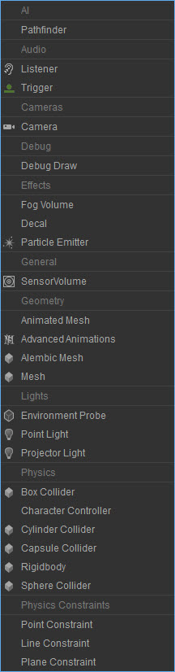
Трансформация
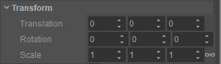
Многие компоненты имеют настройку Transform. Это позволяет смещать их положение и ориентацию относительно объекта, к которому они прикреплены, при этом следуя за ним.
| Настройка | Описание |
|---|---|
| Перевод | Позиционное смещение относительно объекта — например, значение 0,0,1 будет означать смещение на одну единицу вверх (ось Z). |
| Вращение | Смещение поворота относительно объекта. |
| Масштаб | Смещение масштаба относительно объекта. Символ связи фиксирует масштабирование, чтобы значения относились друг к другу. Например, значение 1,2,3, масштабированное в 2 раза, даст 2,4,6. (если разблокировано, масштабирование не может быть гарантировано). |
AI — Следопыт
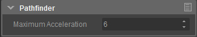
| Настройка | Описание |
|---|---|
| Максимальное ускорение | Максимально возможное физическое ускорение, с которым может двигаться объект AI. |
Аудио — Слушатель
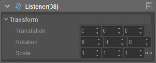
| Настройка | Описание |
|---|---|
| Перевод | Позиционное смещение относительно объекта — например, значение 0,0,1 будет означать смещение на одну единицу вверх (ось Z). |
| Вращение | Смещение поворота относительно объекта. |
| Масштаб | Смещение масштаба относительно объекта. Символ связи фиксирует масштабирование, чтобы значения относились друг к другу. Например, значение 1,2,3, масштабированное в 2 раза, даст 2,4,6. (если разблокировано, масштабирование не может быть гарантировано). |
Аудио — триггер
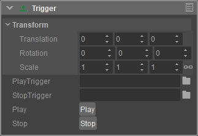
| Настройка | Описание |
|---|---|
| PlayTrigger | Этот триггер выполняется при вызове Play. |
| StopTrigger | Этот триггер выполняется при вызове Stop. |
| Играть | Выполняет PlayTrigger. |
| Стоп | Останавливает PlayTrigger, если не назначен StopTrigger, в противном случае выполняется StopTrigger. |
Камеры - Камера
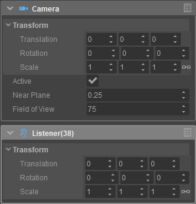
| Настройка | Описание |
|---|---|
| Активный | Должна ли эта камера быть активирована при создании компонента. |
| Рядом с самолетом | Устанавливает расстояние от камеры, с которой мы начнем рендеринг (по умолчанию 0,25 метра). |
| Поле зрения | Поле зрения или угол, который будет отображать камера. |
| Перевод | Позиционное смещение относительно объекта — например, значение 0,0,1 будет означать смещение на одну единицу вверх (ось Z). |
| Вращение | Смещение поворота относительно объекта. |
| Масштаб | Смещение масштаба относительно объекта. Символ связи фиксирует масштабирование, чтобы значения относились друг к другу. Например, значение 1,2,3, масштабированное в 2 раза, даст 2,4,6. (если разблокировано, масштабирование не может быть гарантировано). |
Отладка — Отладка рисования
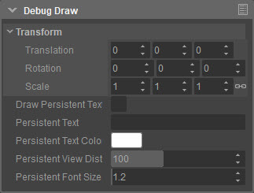
| Настройка | Описание |
|---|---|
| Нарисовать постоянный текст | Будет ли постоянный текст отображаться на экране. |
| Постоянный текст | Постоянный текст, отображаемый на экране. |
| Постоянный цвет текста | Цвет постоянного текста. |
| Постоянное расстояние просмотра | Максимальное расстояние просмотра постоянного текста. |
| Постоянный размер шрифта | Размер шрифта постоянного текста. |
Эффекты - Громкость тумана
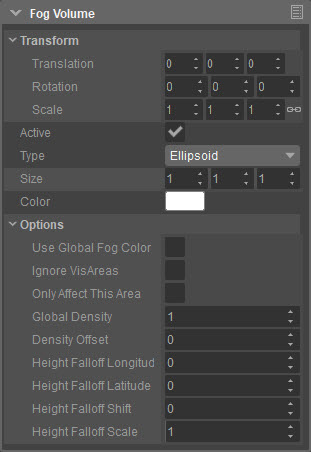
| Настройка | Описание |
|---|---|
| Активный | Активен ли объем тумана в данный момент. |
| Тип | Тип фигуры, используемой для рендеринга объема тумана. |
| Размер | Размер объема тумана. |
| Цвет | Цвет объема тумана. |
| Использовать глобальный цвет тумана | Использовать или нет глобальный цвет тумана для этого объема тумана. |
| Игнорировать VisAreas | Игнорирует ли громкость тумана использование VisAreas на уровне. |
| Влиять только на эту область | Может ли объем тумана влиять только на ту область, в которой он сейчас находится. |
| Глобальная плотность | Управляет плотностью объема тумана. |
| Смещение плотности | Дополнительные элементы управления плотностью объема тумана. |
| Спад высоты, долгота | Направление падения (долгота). 0 = Восток (Положительный X). |
| Спад высоты, широта | Направление падения (широта). 90 = вверх. |
| Сдвиг падения высоты | Управляет тем, насколько смещается плотность тумана в направлении падения. |
| Масштаб падения высоты | Масштабирует распределение плотности вдоль направления спада. Более высокие значения заставят туман падать быстрее. |
Эффекты — Наклейка
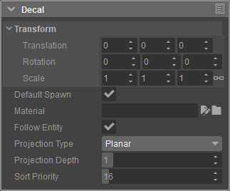
| Настройка | Описание |
|---|---|
| Спавн по умолчанию | Будет ли автоматически появляться наклейка. |
| Материал | Материал, который мы хотим использовать на наклейке. |
| Следовать за сущностью | Следует ли наклейка за объектом. |
| Тип проекции | Используемый метод проецирования. |
| Глубина проекции | Глубина, на которую должна проецироваться наклейка. |
| Сортировать по приоритету | Приоритет сортировки — используется для решения проблем с глубиной других декалей. |
Эффекты — Эмиттер частиц
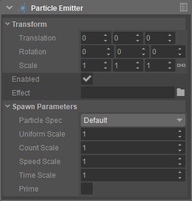
| Настройка | Описание |
|---|---|
| Включено | Должна ли частица излучать энергию по умолчанию. |
| Эффект | Определяет эффект частиц для загрузки. |
| Спецификация частиц | Переопределяет спецификацию частиц для этого эмиттера. |
| Единый масштаб | Равномерная шкала излучателя. |
| Счетная шкала | Множитель количества частиц. |
| Шкала скорости | Множитель скорости выброса частиц. |
| Шкала времени | Множитель времени эмиттера. |
| Премьер | Переводит возраст эмиттера в равновесное состояние. |
Общее - SensorVolume
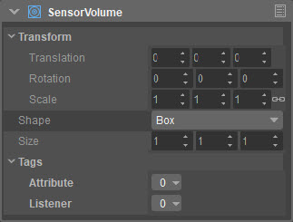
| Настройка | Описание |
|---|---|
| Форма | Форма тома. |
| Размер | Определяет размер фигуры. |
| Атрибут | Идентификаторы этого тома. |
| Слушатель | Определяет, какой атрибут мы хотим прослушивать. Вы будете получать сигналы только для этих конкретных атрибутов. |
Геометрия — анимированная сетка

| Настройка | Описание |
|---|---|
| Тип | Определяет поведение сетки. |
| Файл | Определяет анимированную сетку для загрузки. |
| Минимальная графика теней | Минимальные графические настройки, при которых будут отбрасываться тени. |
| Игнорировать регионы Visareas | Будет ли этот компонент игнорировать области видимости, расположенные на уровне. |
| Расстояние просмотра | Расстояние просмотра от 0 до 100, где 100 = всегда видно. |
| LOD Расстояние | Расстояние уровня детализации от 0 до 100, где 100 = лучший LOD. |
| Глобальное освещение | Тип SVOGI, который нужно использовать. |
| DefaultAnimation | Указывает анимацию, которая будет воспроизводиться по умолчанию. |
| Цикл по умолчанию | Зацикливать или нет анимацию по умолчанию. |
| Масса | Масса предмета в кг. Примечание. Массу невозможно установить одновременно с плотностью. |
| Плотность | Плотность объекта в кг/м3 . Примечание. Плотность не может быть установлена одновременно с массой. |
Геометрия — расширенная анимация
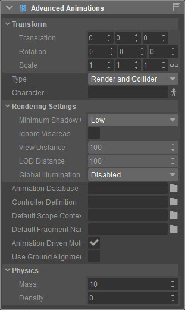
| Настройка | Описание |
|---|---|
| Тип | Определяет поведение сетки static. |
| Персонаж | Определяет персонажа для загрузки. |
| Минимальная графика теней | Минимальные графические настройки, при которых будут отбрасываться тени. |
| Игнорировать регионы Visareas | Будет ли этот компонент игнорировать области видимости, расположенные на уровне. |
| Расстояние просмотра | Расстояние просмотра от 0 до 100, где 100 = всегда видно. |
| LOD Расстояние | Расстояние уровня детализации от 0 до 100 0 – где 100 = лучший LOD. |
| Глобальное освещение | Тип SVOGI, который нужно использовать. |
| База данных анимации | Путь к файлу Mannequin .adb. |
| Определение контроллера | Путь к файлу определения контроллера Mannequin. |
| Имя контекста области по умолчанию | Имя используемого по умолчанию контекста области Mannequin. |
| Имя фрагмента по умолчанию | Имя фрагмента Mannequin по умолчанию для воспроизведения. |
| Движение, управляемое анимацией | Следует ли использовать корневое движение в анимации физического движения. |
| Использовать выравнивание по земле | Позволяет регулировать положение ног для выравнивания по поверхности земли. |
| Масса | Масса предмета в кг. Примечание. Массу невозможно установить одновременно с плотностью. |
| Плотность | Плотность объекта в кг/м3 . Примечание. Плотность не может быть установлена одновременно с массой. |
Геометрия — сетка Alembic
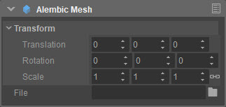
| Настройка | Описание |
|---|---|
| Файл | Файл кэша geom (.abc или .cbc), который нужно загрузить. |
сетка
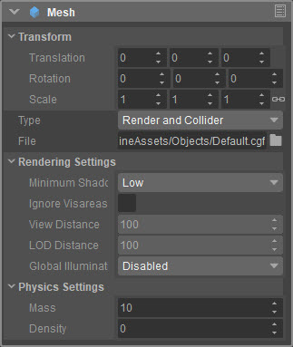
| Настройка | Описание |
|---|---|
| Тип | Определяет поведение сетки. |
| Файл | Определяет CGF для загрузки. |
| Минимальная графика теней | Минимальные графические настройки, при которых будут отбрасываться тени для этого объекта. |
| Игнорировать регионы Visareas | Будет ли этот компонент игнорировать области видимости. |
| Расстояние просмотра | Расстояние просмотра от 0 до 100, где 100 всегда видно. |
| LOD Расстояние | Расстояние уровня детализации от 0 до 100, 100 — всегда лучший вариант LOD. |
| Глобальное освещение | Тип SVOGI, который нужно использовать. |
| Масса | Масса предмета в кг. Примечание. Массу невозможно установить одновременно с плотностью. |
| Плотность | Плотность объекта в кг/м3 . Примечание: Плотность не может быть установлен одновременно с массой. |
Освещение — датчик окружающей среды
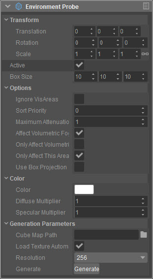
| Настройка | Описание |
|---|---|
| Активный | Определяет, включен ли зонд среды. |
| Размер коробки | Размер области, на которую воздействует зонд. |
| IgnoreVisAreas | Игнорировать ли визуальные области, расположенные на уровне. |
| Сортировать по приоритету | Приоритет сортировки, используемый для решения проблем глубины с другими источниками света. |
| Максимальный спад затухания | Максимальный спад затухания. |
| Влияет на объемный туман | Будет ли этот зонд влиять на объемный туман. |
| Влияет только на объемный туман | Будет ли этот зонд только влияют на объемный туман. |
| Влиять только на эту область | Будет ли этот зонд только влияет на область, в которой он находится в данный момент. |
| Использовать прямоугольную проекцию | Использовать ли коробчатую проекцию для этого зонда окружающей среды. |
| Цвет | Цвет для зонда. |
| Диффузный множитель | Множитель диффузного цвета для зонда. |
| Зеркальный множитель | Множитель зеркального цвета для зонда. |
| Путь карты куба | Путь к карте куба для загрузки. |
| Загружать текстуру автоматически | Следует ли пытаться загрузить текстуру при создании зонда среды. |
| Разрешение | Разрешение зонда (только редактор). |
| Генерировать | Создает карту куба с указанным разрешением (только редактор). |
Свет - точечный свет
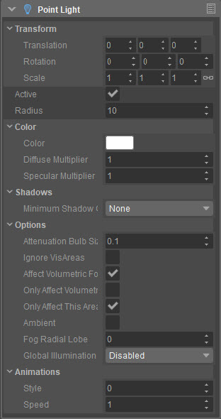
| Настройка | Описание |
|---|---|
| Активный | Определяет, включен ли точечный источник света. |
| Радиус | Определяет дальность точечного света. |
| Цвет | Цвет точечного света. |
| Диффузный множитель | Множитель диффузного цвета для точечного света. |
| Зеркальный множитель | Множитель зеркального цвета для точечного света. |
| Минимальная графика теней | Минимальные графические настройки для отбрасывания теней. |
| Размер лампы затухания | Управляет спадом экспоненциально от начала координат. Значение 1 означает, что свет имеет полную интенсивность (в пределах шара диаметром 1 метр), прежде чем он начнет падать. См. «Затухание и спад» для получения дополнительной информации. |
| Игнорировать VisAreas | Игнорирует ли источник света VisAreas на уровне. |
| Влияет на объемный туман | Должен ли источник света влиять на объёмный туман. |
| Влияет только на объемный туман | Будет ли источник света только влияют на объемный туман. |
| Влиять только на эту область | Будет ли источник света только влияет на область, в которой он находится в данный момент. |
| Эмбиент | Заставляет свет вести себя как источник окружающего света, без точки происхождения. |
| Радиальная лопасть тумана | Регулирует соотношение смешивания главного радиального лепестка (параллельного лучу глаза) и бокового радиального лепестка (перпендикулярного лучу глаза). Направление главного радиального лепестка зависит от используемого значения параметра Anisotropic (находится в диалоговом окне Time of Day). |
| Глобальное освещение | Определяет, как этот свет взаимодействует с глобальным освещением. |
| Стиль | Стиль анимации света. |
| Скорость | Анимация скорости света. |
Освещение - Свет проектора
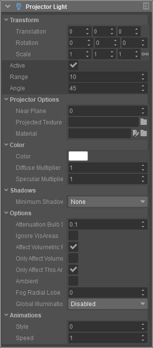
| Настройка | Описание |
|---|---|
| Активный | Определяет, включена ли подсветка проектора. |
| Диапазон | Определяет дальность света проектора. |
| Угол | Определяет угол/поле зрения света проектора. |
| Рядом с самолетом | Определяет расстояние от самого источника света и место, где он начнет проецироваться. |
| Проецируемая текстура | Текстура для проецирования. |
| Материал | Материал для проекта. |
| Цвет | Цвет источника света проектора. |
| Диффузный множитель | Множитель диффузного цвета для источника света проектора. |
| Зеркальный множитель | Множитель зеркального цвета источника света проектора. |
| Минимальная графика теней | Минимальные графические настройки для отбрасывания теней. |
| Размер лампы затухания | Управляет спадом экспоненциально от начала координат. Значение 1 означает, что свет имеет полную интенсивность (в пределах шара диаметром 1 метр), прежде чем он начнет падать. См. «Затухание и спад» для получения дополнительной информации. |
| Игнорировать VisAreas | Игнорирует ли источник света VisAreas на уровне. |
| Влияет на объемный туман | Должен ли источник света влиять на объёмный туман. |
| Влияет только на объемный туман | Будет ли источник света только влияют на объемный туман. |
| Влиять только на эту область | Будет ли источник света только влияет на область, в которой он находится в данный момент. |
| Эмбиент | Заставляет свет вести себя как источник окружающего света, без точки происхождения. |
| Радиальная лопасть тумана | Регулирует соотношение смешивания главного радиального лепестка (параллельного лучу глаза) и бокового радиального лепестка (перпендикулярного лучу глаза). Направление главного радиального лепестка зависит от используемого значения параметра Anisotropic (находится в диалоговом окне Time of Day). |
| Глобальное освещение | Определяет, как этот свет взаимодействует с глобальным освещением. |
| Стиль | Стиль анимации света. |
| Скорость | Анимация скорости света. |
Физика — Бокс-коллайдер
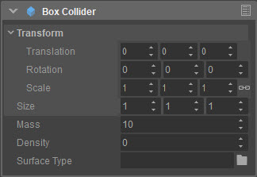
| Настройка | Описание |
|---|---|
| Размер | Размер коробки. |
| Масса | Масса предмета в кг. Примечание. Массу невозможно установить одновременно с плотностью. |
| Плотность | Плотность объекта в кг/м3 . Примечание. Плотность не может быть установлена одновременно с массой. |
| Тип поверхности | Тип поверхности, присвоенный данному объекту – определяет его физические свойства. |
Физика — Контроллер персонажа
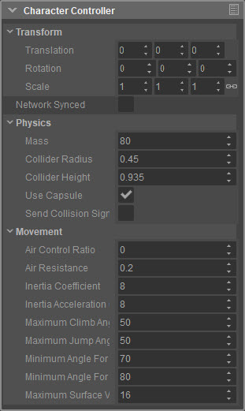
| Настройка | Описание |
|---|---|
| Сетевая синхронизация | Синхронизирует физический объект по сети и поддерживает его синхронизацию с сервером. |
| Масса | Масса персонажа в кг. |
| Радиус коллайдера | Радиус капсулы или цилиндра по умолчанию. |
| Высота коллайдера | Высота капсулы или цилиндра по умолчанию. |
| Использовать капсулу | Использовать ли капсулу для геометрии по умолчанию, в противном случае — цилиндр. |
| Отправить сигнал столкновения | Должен ли этот компонент прослушивать конфликты и сообщать о них. |
| Коэффициент управления воздухом | Указывает, насколько персонаж может двигаться в воздухе, 0 = нет движения, 1 = полный контроль. |
| Сопротивление воздуха | Сопротивление воздуха для персонажа. |
| Коэффициент инерции | Большее значение дает больший эффект демпфирования, тогда как значение 0 не дает эффекта демпфирования. |
| Коэффициент инерционного ускорения | Большее значение дает больший эффект демпфирования ускорения, тогда как значение 0 не дает эффекта демпфирования. |
| Максимальный угол подъема | Максимальный угол, на который может подняться персонаж. |
| Максимальный угол прыжка | Максимальный угол, под которым персонаж может прыгнуть. |
| Минимальный угол для слайда | Минимальный угол перед тем, как персонаж начнет скользить. |
| Минимальный угол падения | Минимальный угол перед тем, как персонаж начнет падать. |
| Максимальная поверхностная скорость | Максимальная скорость поверхности, на которой находится персонаж, прежде чем он будет считаться взлетающим и соскользнувшим. |
Физика — Цилиндрический коллайдер
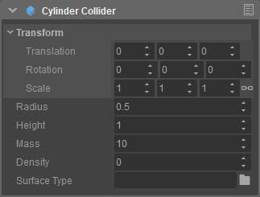
| Настройка | Описание |
|---|---|
| Радиус | Радиус цилиндра. |
| Высота | Высота цилиндра. |
| Масса | Масса предмета в кг. Примечание. Массу невозможно установить одновременно с плотностью. |
| Плотность | Плотность объекта в кг/м3 . Примечание. Плотность не может быть установлена одновременно с массой. |
| Тип поверхности | Тип поверхности, присвоенный данному объекту – определяет его физические свойства. |
Физика — Капсульный коллайдер
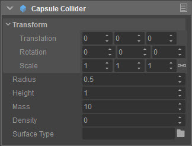
| Настройка | Описание |
|---|---|
| Радиус | Радиус капсулы. |
| Высота | Высота капсулы. |
| Масса | Масса предмета в кг. Примечание. Массу невозможно установить одновременно с плотностью. |
| Плотность | Плотность объекта в кг/м3 . Примечание. Плотность не может быть установлена одновременно с массой. |
| Тип поверхности | Тип поверхности, присвоенный данному объекту – определяет его физические свойства. |
Физика - RigidBody
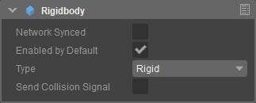
| Настройка | Описание |
|---|---|
| Сетевая синхронизация | Синхронизирует физический объект по сети и поддерживает его синхронизацию с сервером. |
| Включено по умолчанию | Будет ли физика объекта включена по умолчанию. |
| Тип | Тип создаваемого физического объекта. |
| Отправить сигнал столкновения | Должен ли этот компонент прослушивать конфликты и сообщать о них Schematyc. |
Физика — Сферный коллайдер
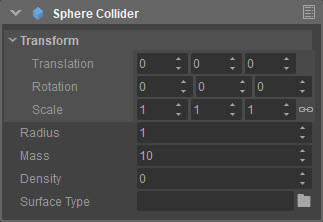
| Настройка | Описание |
|---|---|
| Радиус | Радиус сферы. |
| Масса | Масса предмета в кг. Примечание. Массу невозможно установить одновременно с плотностью. |
| Плотность | Плотность объекта в кг/м3 . Примечание. Плотность не может быть установлена одновременно с массой. |
| Тип поверхности | Тип поверхности, присвоенный этому объекту, определяет его физические свойства. |
Физическое ограничение — точечное ограничение
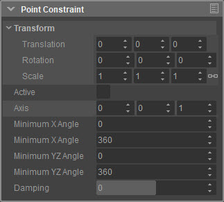
| Настройка | Описание |
|---|---|
| Активный | Следует ли добавлять ограничение при создании компонента. |
| Ось | Ось, вокруг которой ограничен физический объект. |
| Минимальный угол X | Минимальный угол главной оси, которым будет ограничен объект. |
| Максимальный угол X | Максимальный угол главной оси, которым будет ограничен объект. |
| Минимальный угол YZ | Минимальный угол для других осей, которым будет ограничен объект. |
| Максимальный угол YZ | Максимальный угол для других осей, которым будет ограничен объект. |
| Демпфирование | Определяет, насколько объект теряет импульс (при движении), пока ограничение активно. |
Физическое ограничение — ограничение линии
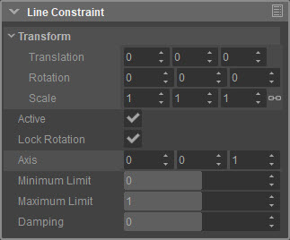
| Настройка | Описание |
|---|---|
| Активный | Следует ли добавлять ограничение при создании компонента. |
| Блокировка вращения | Будет ли ограниченному объекту разрешено вращаться. |
| Ось | Ось, вокруг которой ограничен физический объект. |
| Минимальный лимит | Минимальная позиция, в которую объект может быть перемещен для формирования опорной точки ограничения. Единица -1 указывает, что минимальная позиция находится на расстоянии одного метра позади объекта. |
| Максимальный лимит | Максимальная позиция, на которую можно переместить объект для формирования опорной точки ограничения. Единица +1 указывает, что максимальная позиция находится на расстоянии одного метра от объекта. |
| Демпфирование | Определяет, насколько объект теряет импульс (при движении), пока ограничение активно. |
Физическое ограничение — ограничение плоскости
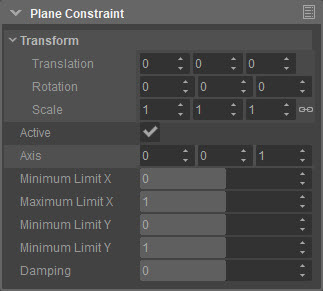
| Настройка | Описание |
|---|---|
| Активный | Следует ли добавлять ограничение при создании компонента. |
| Ось | Ось, вокруг которой ограничен физический объект. |
| Минимальный предел X | Определяет, насколько далеко ограниченный объект может переместиться влево. |
| Максимальный предел X | Определяет, насколько далеко ограниченный объект может сдвинуться вправо. |
| Минимальный предел Y | Определяет, насколько далеко ограниченный объект может переместиться вверх. |
| Максимальный предел Y | Определяет, насколько далеко ограниченный объект может переместиться вниз. |
| Демпфирование | Определяет, насколько объект теряет импульс (при движении), пока ограничение активно. |